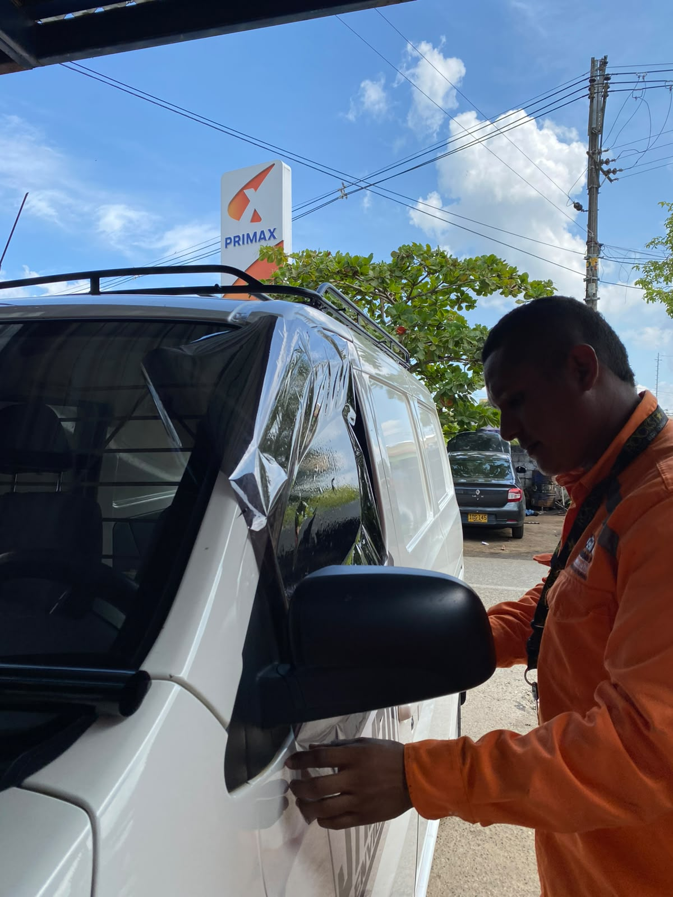

Película, polarizado y nanocerámica

Película, polarizado y nanocerámica
Las películas automotrices ofrecen mucho más que un acabado estético. Ayudan a reducir la temperatura interior del vehículo, proteger a sus ocupantes frente a la radiación solar y brindar mayor privacidad durante la conducción.
En Parabrisas y Cauchos Naranjal instalamos películas de seguridad, polarizados y soluciones de nanocerámica para vehículos livianos y pesados, utilizando materiales de calidad y procesos profesionales que garantizan un acabado uniforme y duradero.
- Películas de seguridad
- Polarizado para vehículos
- Protección y privacidad
- Nanocerámica automotriz
Protección y confort para tu vehículo
Ofrecemos soluciones profesionales en películas de seguridad, polarizado y nanocerámica para vehículos livianos y pesados, mejorando la protección, privacidad y confort durante la conducción.
Películas de Seguridad
Ayudan a mantener los vidrios unidos en caso de impactos y brindan una mayor protección a los ocupantes del vehículo.
Polarizado
Reduce el ingreso de luz solar y proporciona mayor privacidad y confort durante los desplazamientos.
Nanocerámica
Tecnología especializada que ayuda a controlar el calor y la radiación solar manteniendo una excelente visibilidad.
Instalación Profesional
Realizamos una instalación cuidadosa para obtener un acabado uniforme, limpio y duradero.
¿Por qué elegirnos?
Instalación profesional
Contamos con personal capacitado para realizar instalaciones cuidadosas y de calidad.
Protección solar
Ayudamos a disminuir el impacto del sol y el calentamiento del interior del vehículo.
Mayor privacidad
Soluciones que aportan privacidad y confort durante la conducción.